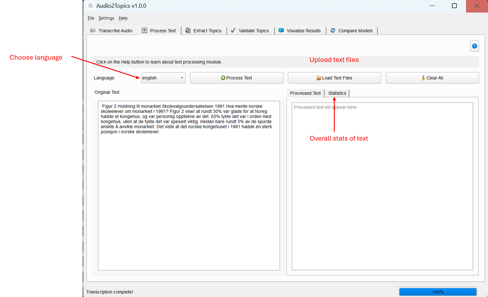

Text Processing Module
Overview
The Text Processing module prepares raw text for topic modeling by cleaning, normalizing, and standardizing content. This critical step transforms unstructured text into a suitable format for analysis, helping to produce more coherent and meaningful topic clusters.
This module allows you to: - Process text from multiple sources (direct input, text files, CSV files, and Word documents) - Clean text by removing stopwords, special characters, and irrelevant elements - Apply advanced NLP techniques including tokenization, lemmatization, and stemming - Generate detailed text statistics to understand document characteristics - Process documents in multiple languages (currently English and Norwegian)
Main interface of the Text Processor Tab

Core Components
TextProcessor Class
The TextProcessor class serves as the main interface for text processing functionality. It manages the processing workflow and provides methods for calculating text statistics and handling language selection.
Methods
| Method | Description | Parameters | Returns |
|---|---|---|---|
process_text() |
Starts processing documents using a worker thread | documents: String or list of strings to processlanguage: Language for text processing |
Returns the worker thread that can be connected to signals |
get_available_languages() |
Gets list of supported languages | None | List of supported languages |
get_text_statistics() |
Calculates text statistics synchronously | text: Text to analyzelanguage: Language for text processing |
List of tuples with statistic name and value |
TextProcessorWorker Class
The TextProcessorWorker class extends QThread to handle text processing in a background thread, keeping the UI responsive during processing.
Signals
| Signal | Description | Parameters |
|---|---|---|
progress_updated |
Emitted to update progress | int: progress percentage, str: status message |
processing_completed |
Emitted when processing is done | list: list of processed documents |
error_occurred |
Emitted when an error occurs | str: error message |
Key Text Processing Functions
| Function | Description | Parameters |
|---|---|---|
clean_text() |
Cleans text by removing stopwords, special characters, and applying stemming/lemmatization | text: Text to cleanlanguage: Language for processingnlp: Pre-loaded SpaCy model (optional) |
calculate_text_statistics() |
Calculates various text statistics | text: Text to analyzelanguage: Language for processing |
load_spacy_model() |
Loads SpaCy model with caching and thread safety | language: Language for the model |
Text Processing Steps
The text processor performs several operations to prepare text for topic modeling:
- Email and URL Removal: Identifies and removes email addresses and web URLs
- Special Character Removal: Strips punctuation, symbols, and other non-alphanumeric characters
- Number Removal: Eliminates numeric digits that typically don't contribute to topic meaning
- Case Normalization: Converts all text to lowercase for consistent processing
- Tokenization: Breaks text into individual words or tokens
- Stopword Removal: Filters out common words (like "the", "and", "is") that don't contribute to meaning
- Stemming (optional): Reduces words to their root form by removing prefixes and suffixes
- Lemmatization: Reduces words to their dictionary base form to group similar words together
User Interface
The ProcessorTab class provides the user interface for text processing functionality.
UI Components
- Text Input Panel:
- Text area for entering or loading text
-
Document loading from text files, CSV files, and Word documents
-
Processing Controls:
- Language selection dropdown
- Process button
- Load and Clear buttons
-
Progress bar with status updates
-
Output Display:
- Processed text view
-
Text statistics table
-
CSV Import Dialog:
- Options for CSV delimiter, encoding, and header detection
- Column selection for multi-column CSV files
- Data preview table
Usage Guide
Entering Text
Text can be added to the processor in multiple ways:
- Direct Input: Type or paste text directly into the text area
- Loading Files: Click "Load Text Files" to open supported file types:
- Text files (*.txt)
- CSV files (*.csv) with column selection
- Word documents (*.docx)
# Code example for processing text programmatically
from core.text_processor import TextProcessor
text_processor = TextProcessor()
documents = ["This is a sample document with some example text.",
"Here's another document with different content."]
worker = text_processor.process_text(documents, language="english")
# Connect to signals
worker.progress_updated.connect(update_progress)
worker.processing_completed.connect(handle_completed)
worker.error_occurred.connect(handle_error)
Processing Options
- Language Selection: Choose the appropriate language from the dropdown
- Currently supported: English and Norwegian
-
Language selection affects stopword removal, stemming, and lemmatization
-
Processing: Click "Process Text" to begin cleaning the text
- The progress bar shows status updates during processing
- Results appear in the "Processed Text" tab when complete
Working with CSV Files
When importing CSV files, a dialog appears allowing you to:
- Configure import options:
- Select delimiter (comma, semicolon, tab, pipe, or custom)
- Choose file encoding (UTF-8, ASCII, ISO-8859-1, etc.)
-
Specify whether the first row contains headers
-
Select columns to import:
- Choose specific columns to include in the text
- Preview the data before importing
This is particularly useful for importing structured data where only certain columns contain relevant text for topic modeling.
Understanding Text Statistics
After processing, the Statistics tab displays various metrics about your text:
| Statistic | Description |
|---|---|
| Number of sentences | Total count of sentences detected in the text |
| Number of tokens | Total count of words and other elements before filtering |
| Number of unique words | Count of distinct words, showing vocabulary richness |
| Number of words (excluding stopwords) | Count of meaningful words after removing common stopwords |
| Number of stop words | Count of common words that were filtered out |
| Average sentence length | Average number of words per sentence |
| Most common words | List of the most frequently occurring words and their counts |
| Number of characters | Total character count in the text |
| Average word length | Average number of characters per word |
These statistics help evaluate text characteristics and verify the effects of processing.
Language Support
The text processor supports multiple languages with language-specific processing:
Currently Supported Languages
- English: Complete support for stopwords, stemming, and lemmatization using NLTK and SpaCy's
en_core_web_smmodel - Norwegian: Full language support including Nordic-specific processing using SpaCy's
nb_core_news_smmodel
Each language has specific: - Stopword lists for filtering common words - Stemming algorithms tailored to language structure - Lemmatization dictionaries for word normalization
Language-Specific Considerations
- Select the predominant language for documents with mixed language content
- Processing effectiveness varies by language, with best results for the fully supported languages
- The system uses SpaCy's language models, which are loaded dynamically the first time they're needed
Tips for Effective Text Processing
Best Practices
- Check Before and After: Review both original and processed text to ensure important content isn't lost
- Balance Cleaning Aggressiveness:
- Too aggressive: Important terms may be removed
- Too lenient: Noise may affect topic modeling quality
- Use Consistent Processing: Apply the same settings to related documents
- Provide Adequate Volume: Aim for at least several thousand words total across all documents
- Structure Your Documents: Each document should ideally cover a coherent topic or subtopic
Domain-Specific Considerations
- Technical Content: Consider preserving specialized terminology even if uncommon
- Names and Entities: Proper nouns may be important despite being uncommon words
- Abbreviations: Standardize abbreviations and acronyms where possible
- Multilingual Content: Process documents in their primary language for best results
Common Issues and Solutions
| Issue | Solution |
|---|---|
| Over-processing removes important terms | Review processed text and adjust settings if needed |
| Under-processing leaves too much noise | Check statistics for high counts of unique words that may indicate insufficient cleaning |
| Very short documents | Combine related short texts into more substantial documents |
| Mixed languages in documents | Split by language or process using the predominant language |
| Special domain vocabulary removed | Consider creating a custom stopword list that preserves domain terms |
Troubleshooting
CSV Import Issues
- CSV parsing errors: Try different delimiter settings or check for file corruption
- Character encoding problems: Select a different encoding (UTF-8, ISO-8859-1, etc.)
- Large CSV files: For very large files (>10MB), consider splitting or pre-filtering the data
Processing Performance
- Slow processing:
- SpaCy models are loaded the first time they're used, causing initial delay
- Processing speed depends on document size and complexity
- Large documents with many sentences take longer to process
Language Support Limitations
- Unsupported languages: Currently limited to English and Norwegian
- Stemming unavailable: If no stemmer is available for a language, the system will skip stemming
- Missing stopwords: If no stopwords are available, an empty set is used